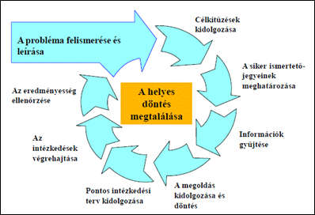

Projektmenedzsment
A projektmenedzsment olyan tevékenység, amelynek célja egy meghatározott célnak vagy eredménynek a megvalósítása, különösen egy meghatározott időkereten belül és korlátozott erőforrások felhasználásával.
Ez az eljárás segít abban, hogy egy projektet hatékonyan tervezzenek,
koordináljanak és irányítsanak a kezdeti tervezéstől a befejezésig.
A projektmenedzsmentnek több fő eleme van:
- Célkitűzés: Meghatározni, hogy mi a projekt célja, milyen eredményeket kell elérni, és milyen erőforrásokat igényel a sikerhez.
- Tervezés: A projektmegvalósítás lépéseinek és feladatainak kidolgozása, a szükséges erőforrások, költségvetés és időkeret meghatározása.
- Végrehajtás: A projektterv végrehajtása, az erőforrások felhasználása és a feladatok elvégzése a tervezett időben és költségkereten belül.
- Ellenőrzés és monitorozás: A projekt előrehaladásának figyelemmel kísérése, az előzetesen meghatározott teljesítménymutatók és mérföldkövek ellenőrzése, valamint az esetleges változások kezelése.
- Végső értékelés és lezárás: A projekt teljesítményének értékelése, a tapasztalatok levonása és a projekt hivatalos lezárása, beleértve a dokumentáció elkészítését és az esetleges utólagos feladatok kezelését.

A projektmenedzsment során számos módszer és keretrendszer létezik, amelyek segítenek a projekt sikerességének biztosításában.
Ezek közé tartozik például a Vízesés modell, a SCRUM, a Kanban stb. A választott módszer általában függ a projekt jellegétől, a csapat méretétől és más körülményektől.
Összességében a projektmenedzsment fontos eszköz a projekt célok hatékony és hatékony megvalósításához, a projekt teljes életciklusának tervezésétől kezdve a végrehajtáson és monitorozáson át a lezárásig.
Wikipédia